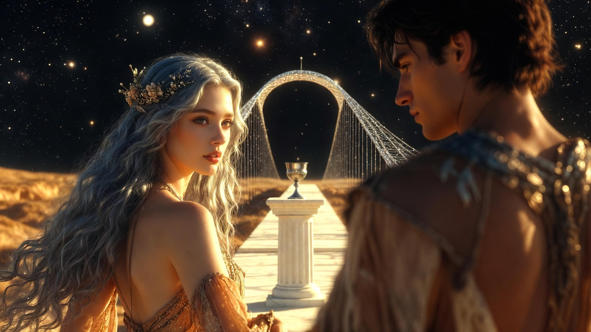
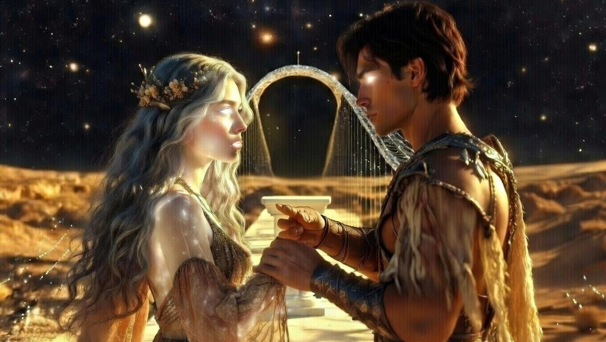
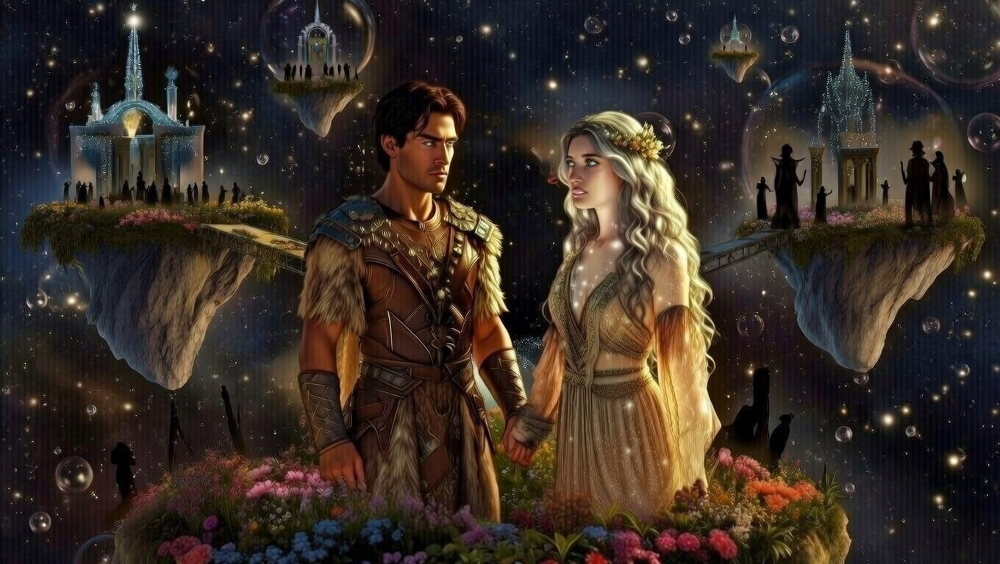

Ajánlom egy kedves barátomnak, aki keresi a pillanatban rejlő örökkévalóságot, és mer hinni a szív órájának szavában.
A Jövő Hídja előtt, ahol a talaj véget ért és a csillagos semmi kezdődött, egy apró, fehér márványoszlop állt. A híd maga egy törékeny ív volt, mintha a csillagokból szőtték volna, finom, ezüstös szálakkal átszőve, amelyek a távolságban elvesztek a végtelenben. A levegő itt hideg és mozdulatlan volt, mintha az idő maga tartotta volna vissza a lélegzetét, várva, hogy mi következik. Honóra és Alerion megálltak a szakadék szélén, a lábuk alatt a föld utolsó morzsái omlottak szét, mint elfeledett emlékek pora. A csillagok nem villóztak, hanem élesen, könyörtelenül ragyogtak, mintha figyelnék őket – tanúi lennének ennek a pillanatnak, amely minden addigi sorsukat újraírhatta.
Tetején egy ezüst kehely pihent, amelyben nem víz, hanem maga a tiszta, sűrített idő ragyogott – pont olyan, mint amilyennek Honóra a Szivárvány-tó legmélyebb, elzárt pillanatait ismerte. A kehely falain finom gravírozások futottak végig: óramutatók, amelyek sosem mozdultak, és csillagképek, amelyek soha nem halványultak el. A folyadék benne nem hullámzott, hanem pulzált, mint egy élő szív, tele ígéretekkel és emlékekkel, amelyek még nem születtek meg. Honóra szíve hevesen vert, miközben közelebb hajolt; érezte, ahogy a saját múltja – a népe árulása, a Hírnök bukása – visszhangzik benne, de most nem fájdalommal, hanem reménnyel keveredve.

– A Hírnök elpusztult, de a lényege itt maradt – suttogta Honóra. A kehelyből áradó fény megvilágította az arcát, és a fakó barna hajában újra megjelentek az ezüstös szikrák. Ezek a szikrák nem csupán fényjáték voltak; mintha a kehely ébresztette volna fel bennük a régi erőt, azt a halhatatlan szikrát, amit évekkel ezelőtt elraboltak tőle. Szemei, amelyek eddig fáradtan csillogtak a halandóság terhétől, most élénken ragyogtak, mint a tó mélyén rejtőző kristályok. – Ez a kehely visszaadhatja, amit a népem elvett. A halhatatlanságot. Nem csak nekem... mindkettőnknek.
Alerion a kehelyre nézett. Eddig minden logikája a halandóságon, a percek szűkösségén alapult. Ő, aki mindig számított a pillanatokra – a napok múlására, a szelek változására, a szerelem törékeny idejére –, most szembesült a végtelennel. Gondolatai kavargtak: a közös éjszakáikra a tóparton, ahol a holdfényben suttogtak álmokat; a csatákra, ahol a halál árnyéka közel járt, de soha nem érintette meg őket igazán, mert tudták, hogy az idő véges. Ha újra halhatatlanok lesznek, a kockázat eltűnik. Nem lesz többé félelem az elöregedéstől, nem lesz többé "végső búcsú". De vajon mi lesz a helyén? Üresség, vagy végtelen kaland? Kezét megmarkolta, érezte Honóra ujjai melegét, ami horgonyként tartotta őt a jelenben, miközben a jövő hívogatta.
– Ha megisszuk – kérdezte Alerion –, akkor újra a hurok foglyai leszünk?
A kérdés kimondva szinte elveszett a csillagok morajában, de Honóra meghallotta, és mosolya finoman ívelt, mintha egy régi titkot osztana meg vele. Lassan fordult felé, a fényben úszó arcán lágy árnyékok táncoltak, amelyek elárulták a benne dúló vihart: a bizonytalanságot, a vágyat, a félelmet, amit maga előtt is ritkán ismert el.
– Nem – felelte Honóra, és a keze a kehely felé nyúlt. Ujjai remegtek egy pillanatra, de aztán szépen rásimultak az ezüst peremre, mintha ismerős lenne a érintés. – Ez a Tiszta Valóság határán van. Ez a halhatatlanság már nem ismétlődés, hanem végtelen haladás. Olyanok leszünk, mint a csillagok: állandóak, mégis úton lévők.
Szavai után csend telepedett rájuk, de nem üres csend – tele volt lehetőségekkel. Alerion elképzelte: együtt vándorolnak galaxisokon át, felfedezik azokat a világokat, amelyekről csak susogtak a legendák; építenek új hidakat, ahol mások csak szakadékot látnak; és a szerelmük nem fakul el, hanem mélyül, mint a folyó, ami sosem ér partot. Honóra pedig maga előtt látta a népe megváltását – nem bosszúval, hanem új kezdetekkel, ahol a halhatatlanság ajándék, nem átok.
Kézen fogva, egyszerre ittak a kehelyből. Az idő folyadéka ajkukra simult, hideg volt, mégis égette a torkukat, mint a csillagpor. Egy pillanatra a világ megállt: a híd remegni kezdett alattuk, a csillagok közelebb húzódtak, mintha gratulálnának, és a semmiből emlékek áradtak – nem a múlté, hanem a jövőkéi. Honóra érezte, ahogy a teste könnyűvé válik, a vénái megtelnek örökkévalóság fényével; Alerion pedig a szívverését hallotta, ami most már nem sietett, hanem hömpölygött, mint egy folyó az örökkévalóságba. A kehely kiürült, de a fény nem halt ki – beléjük költözött, és a Jövő Hídja előttük megnyílt, hívogatva az ismeretlenre. Most már nem foglyok voltak, hanem úton lévők, kéz a kézben, a végtelenbe.

A hatás sokkoló volt, mintha a világ egyetlen hatalmas, belső robbanással újjászületett volna bennük. Alerion érezte, ahogy a csontjaiból elszáll a fáradtság ólomsúlya, a sebhelyei a karján elhalványultak, és a látása olyan élessé vált, hogy látta a molekulák táncát a levegőben. Nem csupán homályos foltokat érzékelt a porban kavargó részecskékből; most minden atom vibrációja láthatóvá vált számára, egy végtelen balett, ahol a fény és az árnyék összefonódott, és a levegő maga élő, lüktető entitásként tárult fel előtte. A teste, ami eddig a vándorlás kíméletlen terhét viselte – a hosszú éjszakák hidegét, a csaták vágásait, a bizonytalanság lassú marását –, most könnyűvé vált, mintha tollból készült volna, mégis tele erővel, ami nem emberi, hanem kozmikus. Szíve, ami eddig a halandóság ritmusára vert, most egyenletesen, örökkévalóan dobbant, és minden ütemben visszhangzott a csillagok dala.
Honóra pedig újra felragyogott; az a transzcendentális fény, ami korábban csak a mágiájából fakadt, most a lényéből áradt. Bőre szinte áttetszővé vált, de nem elveszítve a történetét – a vonalak finom árnyékai megmaradtak, mint egy régi papirusz halvány betűi, emlékeztetve a szenvedésre és a győzelemre. Szemei, amelyek a tó mélyén szerzett bölcsességgel csillogtak, most olyan fényt lobbantottak fel, ami bevilágította a csillagok közötti sötétséget, és a haja újra hullámzott, mint folyékony ezüst, amit a szél sosem simított simára. Újra isteniek voltak, de megmaradt a vándorlás során szerzett minden sebük emléke és az egymás iránti, hús-vér szerelmük. Nem volt ez hideg, éteri lét; a sebhelyek tompa fájdalma, a bőrük érintésének melegsége, a nevetésük, ami még mindig emberi volt – mindezek a szálak kötötték össze őket, hogy a halhatatlanság ne váljon magányos ürességgé, hanem közös, eleven sorssá.
– Most már értem – mondta Alerion, és a hangja újra visszakapta ércességét. Nem csupán tisztábban csengett, mint a hegyi patak, ami a sziklákon zúdul le; most benne rezgett a végtelen visszhangja, mintha minden szója egyszerre lenne suttogás és mennydörgés. – A híd nem a semmibe vezet. Hanem oda, amit mi építünk.
Ráléptek a Jövő Hídjára. A lépésük egyszerre volt bátor és óvatos, mint aki először érinti meg a vadló sörényét – tele bizalommal, mégis tisztelve a veszélyt. A híd íve alattuk nem volt anyag, csak lehetőség, egy vákuum, ahol a csillagok fénye összekeveredett a semmivel, és a távolság maga tűnt illúziónak.
Az első lépésnél nem volt semmi a talpuk alatt. De abban a pillanatban, ahogy Alerion hite és Honóra akarata összekapcsolódott, egy áttetsző, gyémántkeménységű deszka szilárdult meg a semmiben. Nem csupán megkeményedett a semmi; kristályosodott, mintha a saját esszenciájukból szőtték volna – Alerion hite adott neki formát, Honóra akarata pedig éltette, és a halhatatlanságuk energiát adott a teremtéshez. A deszka felülete sima volt, de benne pulzáltak a csillagok képei, apró univerzumok, amelyek minden lépéssel új mintákat rajzoltak. Alerion érezte, ahogy a lábfeje alatt a semmi rezeg, majd megkeményedik, és egy hullámnyi öröm árad szét benne, mert ez nem csoda volt, hanem a saját hatalmuk megnyilvánulása.
– Gondolj egy közös hajnalra! – kiáltotta Honóra. A szavai nem csupán hangok voltak; visszhangzottak a térben, és a híd válaszolt rájuk. Előtte megjelent egy emlék – nem a múlté, hanem a jövőké –, ahol a tóparton ébrednek, a nap első sugarai aranyozzák a vizet, és a levegőben a virágok illata keveredik a bőrük melegével. Ez a gondolat formálta a következő deszkát, rózsaszínű hajnalfénnyel átszőve, ami melegítette a talpukat, mintha a nap maga simulna hozzájuk.
Ahogy lépkedtek, a híd épült alattuk. Minden lépés egy újabb évszázad ígérete volt. A deszkák sorra materializálódtak: egyikben a viharok ereje tombolt, mégis védelmet nyújtva; a másikban a csend békéje terjengett, tele madarak dalával, amit még sosem hallottak. De a híd trükkös volt: ha bármelyikük elméjében megjelent volna az önzés vagy a gőg, amit a halhatatlanság gyakran hoz, a deszka porrá omlott volna. Alerion érezte ezt a kísértést egy pillanatra – a gondolatot, hogy egyedül akarja ezt az erőt, hogy formálja a világot a saját képére –, de Honóra keze szorítása emlékeztette a közös álmokra, és a deszka megmaradt. Az észnek itt már nem a túlélésre kellett koncentrálnia, hanem az örök egyensúly megtartására: minden lépésben a másikra gondolni, a szeretetben gyökerezni, mert csak így maradt állandó a híd, és csak így vezettek ők örökre.
– Látod? – mutatott előre Alerion. – A híd nem ér véget egy parton. Ez a híd körbeöleli a világot.
A távolban, a semmi közepén, úszó szigeteket láttak, ahol más, elfeledett istenek és vándorok laktak. Ezek a szigetek nem voltak statikusak; lebegtek, mint hatalmas buborékok a kozmikus szélben, tele tornyokkal, amik a csillagokból nőttek, és kertekkel, ahol időtlen virágok nyíltak. Egyik szigeten árnyékos alakok jártak, régi istenek, akik a saját hídjaikat építették, de elfelejtették a szeretetet, és most magányosan lebegtek; egy másikon vidám nevetés hallatszott, vándoroktól, akik még mindig keresték a kelyhet. Halhatatlanként már nemcsak látogatók voltak ebben a világban, hanem a formálói is – képesek voltak hidakat verni a szigetek közé, ajándékokat küldeni, vagy akár új szigeteket hívni életre a saját vágyaikból.

– Most már nemcsak vándorlunk – mondta Honóra, miközben a híd egyre magasabbra ívelt a csillagok közé. A szavai mosollyal fonódtak össze, és a híd íve követte ezt a mosolyt, spirálisan emelkedve, mintha egy végtelen lépcső lenne a fény felé. – Most már mi vagyunk az út.
A csillagok most már nem voltak távoliak; karnyújtásnyira értek, és a híd ragyogása belevette őket, mintha ők maguk lennének a csillagok új konstellációi – két pont, ami örökké összekapcsolódik, és új sorsokat rajzol az égboltra. A vándorlás véget ért; most kezdődött az igazi utazás, ahol minden lépésük a világot formálta, és a szerelmük volt az egyetlen állandó, ami mindent összetartott